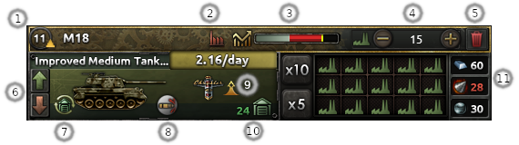
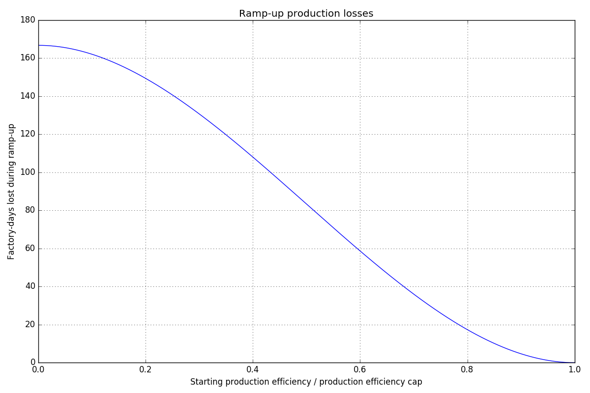

生产
原页面：Production
生产指为军方制造坦克、火炮、飞机和舰船等用于进行国家战争的 装备。在各州与省份中建造建筑（既包括军事设施，也包括经济建设）称为建造。
装备。在各州与省份中建造建筑（既包括军事设施，也包括经济建设）称为建造。
工厂
工厂共有三种：
 民用工厂：用于建造（包括修理）、贸易、消费品、购买装备许可、国际市场（需 ），以及情报机构及其升级（需 ）。这些的基础产出为4[1]，有电力时的产出为
民用工厂：用于建造（包括修理）、贸易、消费品、购买装备许可、国际市场（需 ），以及情报机构及其升级（需 ）。这些的基础产出为4[1]，有电力时的产出为 5[2]
5[2]  工业产能
工业产能 每日。
每日。 军用工厂：生产陆基与空基装备，包括步兵、火炮、坦克、航空队和铁路所需者。这些工厂的基础产出为每天3.5[3]，有电力供应时为每天4.5[4]。该产出会同时乘以
军用工厂：生产陆基与空基装备，包括步兵、火炮、坦克、航空队和铁路所需者。这些工厂的基础产出为每天3.5[3]，有电力供应时为每天4.5[4]。该产出会同时乘以 工厂产出
工厂产出 修正和生产效率
修正和生产效率 ，二者彼此独立生效。
，二者彼此独立生效。 海军船坞：生产舰船、潜艇、运输船队及其他海军装备。其基础产出为 2[5]，电力充足时每日产出 2.5[6]。该产出受
海军船坞：生产舰船、潜艇、运输船队及其他海军装备。其基础产出为 2[5]，电力充足时每日产出 2.5[6]。该产出受.png) 船坞产出修正影响；海军船坞不受生产效率影响。
船坞产出修正影响；海军船坞不受生产效率影响。
军用工厂 和海军船坞
和海军船坞 的主要产出修正是生产科技和工业科技，而民用工厂
的主要产出修正是生产科技和工业科技，而民用工厂 主要受建造科技和经济法令影响。
主要受建造科技和经济法令影响。
生产线
军用与海军装备的生产按生产线组织，每条生产线同一时间只生产一种装备：陆基与空基装备使用分配来的 军用工厂，海军装备使用
军用工厂，海军装备使用 海军船坞。单条生产线最多可分配 150[7]座工厂，但一个国家可以运行多条生产同一物品的生产线。
海军船坞。单条生产线最多可分配 150[7]座工厂，但一个国家可以运行多条生产同一物品的生产线。
舰船生产线可分配的船坞数量有上限。同一时间最多有 5[8]  海军船坞能参与建造一艘主力舰；屏卫舰与潜艇的上限为 10[9]，运输船队为 15[10]，以及 5[11]（用于
海军船坞能参与建造一艘主力舰；屏卫舰与潜艇的上限为 10[9]，运输船队为 15[10]，以及 5[11]（用于 浮动港口）。
浮动港口）。
某些特殊陆军单位每条生产线也有军用工厂数量上限：各为 5[12]，适用于 列车炮（包括超重型）、超重型榴弹炮（包括自行式）和陆上巡洋舰。
列车炮（包括超重型）、超重型榴弹炮（包括自行式）和陆上巡洋舰。

生产线界面

- 物品名称及在队列中的位置
- 生产该物品的军工组织（MIO）
- 生产效率
- 分配给该物品的工厂数量
- 删除此生产线
- 在生产优先级队列中向上或向下移动生产线。也可以拖动方框顶部进行拖放。
- 切换装备转换模式
- 该物品的专精角色（如适用，此处为坦克歼击车）
- 用于设计该型号的军工组织。向上箭头表示可以应用该军工组织的新版本。（没有 Arms against Tyranny DLC 时，此处显示设计公司。）
- 生产是用于补充兵力、升级现役单位，还是送入库存。数字表示该装备类型所需或库存的数量。
- 此生产线消耗的资源；红色表示短缺
方框中的许多元素都带有提示框，可查看详细信息。
生产效率

每条生产线都有自己的效率等级，决定其生产当前 装备的效率高低。效率越高，生产线生产装备越快，直至达到上限。持续运行同一条生产线会逐步提高其效率。
装备的效率高低。效率越高，生产线生产装备越快，直至达到上限。持续运行同一条生产线会逐步提高其效率。
生产效率从基础值（无修正时为 10%[13]）开始，并逐日提升至生产效率上限（无修正时为 50%[14]）。所有这些都可能被工业科技、科研和国策提高。每日基础生产效率增长为：
：每日生产效率增长= 0.001 (( 生产效率上限 )^2)/(当前生产效率)
（所有数值都可以用百分比或小数表示，只要各处使用的表示方式一致即可。）
因此每日基础增长最低约为 0.05%（接近 50% 的初始上限时），最高为 1%（上限 100%、当前效率 10% 时）。
或者，达到某一生产效率水平所需的相对时间（天）由下式给出
：t = 500 ( (生产效率)/(生产效率上限) )^2
例如，从上限的 25% 提升到上限的 75% 需要: 500 · (0.75/1.00)^2 - 500 · (0.25/1.00)^2 = 250天。
因此，补给充足的生产线最多需要 500 天达到上限。（500 天是从 0% 效率增长到 100% 极限（无任何调整）的理论总时间，也是公式中的基本常数。）与同期以满上限运行的工厂相比，这最多造成 166.6 工厂日的产出缺口。
生产效率按工厂分别计算。向现有生产线添加一座或多座新工厂会降低新增工厂的生产效率。需要注意，生产线中已有的工厂不会损失效率——它们生产的东西并没有变化。只有新工厂的效率为最低值。
注意：当军用工厂被摧毁或受损、工厂总数下降时，损失会从列表底部开始扣除，这些工厂会失去其效率。明智的预防措施是把高优先级、高效率的生产线在列表中上移。
虽然所有 军用工厂都受生产效率影响，但某些特殊装备类型不受被动
军用工厂都受生产效率影响，但某些特殊装备类型不受被动 生产效率增长影响，最典型的是
生产效率增长影响，最典型的是 列车炮。[15]提高这些生产线生产效率的唯一方法是提高其基础生产效率。
列车炮。[15]提高这些生产线生产效率的唯一方法是提高其基础生产效率。
生产效率保持
把生产线切换到相关类型的装备，不仅会取消上一件物品的生产及其已投入的时间，还会降低该生产线的生产效率。降幅取决于改动的剧烈程度，玩家能保留的原有效率比例也随之变化：
- 保留 90%[16]：同一型号的不同变体（例如 Panzer III Ausf. F → Panzer III Ausf. G [德国中型坦克 1 的变体]；这也包括从许可生产转为自行生产同一装备类型，例如意大利战斗机 II C.202 Folgore 转为德国战斗机 II FW190）
- 保留 70%[17]：同一底盘的不同型号（例如 Panzer III → StuG III [德国中型坦克 1 转为德国中型坦克歼击车 1]）
- 保留 30%[18]：同类型装备的直接升级或直接降级（例如 Panzer III → Panzer IV [德国中型坦克 1 转为德国中型坦克 2]）
- 保留 20%[19]：同类型装备的间接升级或间接降级（例如 Panzer III → Panther [德国中型坦克 1 转为德国中型坦克 3]）
- 保留 10%[20]：任何其他改动（例如步兵装备 1 转为牵引火炮 1）
除更换变体（总会造成 10% 的损失）外，这些影响可通过研究以下科技降低：
每项科技都提供生产效率保持加成，用于减少切换生产线时的生产效率损失。
把生产线切回原先生产的旧装备，并不能挽回此前切换生产线造成的生产效率损失。生产效率保持完全取决于当前生产的装备与要切换到的装备之间的差异。
计算含保持加成的生产效率
在已解锁分散式工业和/或柔性生产线的情况下切换生产线时，新的生产效率并非效率保持（即上一节中以红色标示的数值）与技术提供的生产效率保持加成的简单相加。正如游戏内修正所描述的，保持加成按生产效率损失的一定百分比生效（例如保持 10% 意味着损失 90%，因此 10% 的加成会把损失减少 90% 的 10%，即 9%，从而得到 19% 的新保持率。）
新的生产效率可分三步计算。第一步，用保持修正乘以效率损失，得到加成效率。第二步，把该乘积加到原有效率保持（即上一节中以红色标示的数值）上，得到新的效率保持。第三步，用当前生产效率乘以新的效率保持，即得到新的生产效率。
注意，若基础生产效率（默认为 10%[20]）高于该结果，则以基础生产效率为准。
可以把这三个步骤合并为一个公式来计算新的生产效率：
：带保留的生产效率 = CPE · ( RET + (1 - RET ) · BON )
其中
- CPE：当前生产效率；
- RET：保持率（上表中红色的数值，或其他生产切换时的 10%）；
- BON：通过分散式工业 I 至 V 或柔性生产线获得的效率保持加成。
由该公式可见，保持率（RET）越低，加成（BON）的效果越明显。
综上，实际生产效率由：实际生产效率 = \max( 带保留的生产效率, 基础生产效率 )给出
舰船
舰船、潜艇和运输船队都在 海军船坞中生产，这些生产线没有生产效率。每座船坞每天固定产出 2[21]，并受
海军船坞中生产，这些生产线没有生产效率。每座船坞每天固定产出 2[21]，并受 船坞产出
船坞产出 修正影响。因此，若把船坞生产线改为建造另一种舰船，未完工舰船的全部进度都会损失，但船坞会立即以满效率投入新的生产线。
修正影响。因此，若把船坞生产线改为建造另一种舰船，未完工舰船的全部进度都会损失，但船坞会立即以满效率投入新的生产线。
与陆基装备不同，维修舰船需要为此分配 海军船坞。每座船坞同一时间最多维修一艘舰船，允许同时维修舰船的船坞数量上限可在生产界面中调整。正在维修舰船的船坞会从活跃生产线中移出，直至维修完成。
海军船坞。每座船坞同一时间最多维修一艘舰船，允许同时维修舰船的船坞数量上限可在生产界面中调整。正在维修舰船的船坞会从活跃生产线中移出，直至维修完成。
装备转换
生产线可以设定为通过改装同底盘的过时或外国（缴获、租借、许可生产或购买所得）装备来生产某件物品。只要（假设）有可用的输入物品，任何时候都可以通过点击生产线方框左下角的按钮进行改装，且不会损失生产效率。当该生产线没有可改装的装备时，它会自动恢复为从原材料生产。
装备转换可用于把坦克转换为坦克歼击车，或用新模块升级旧 坦克和飞机
坦克和飞机 设计等用途。它通常比从头生产更快（取决于对设计所做的改动数量），并可通过装备转换科技进一步提速。战略资源仅在旧设计不需要而新设计需要时才会被消耗。
设计等用途。它通常比从头生产更快（取决于对设计所做的改动数量），并可通过装备转换科技进一步提速。战略资源仅在旧设计不需要而新设计需要时才会被消耗。
舰船也可以在特遣舰队面板中以类似方式改装为新设计。每艘舰船必须单独改装，需要占用大量船坞时间（尤其是更换引擎和装甲时）。要改装在和平会议中获得的外国舰船，必须从舰船信息面板的设计标签页创建新设计；但有时可能无法生成有效的改装目标。[22]改装一旦开始，在完成度不足 20%[23]之前都可以安全取消，此后取消改装则必须将舰船凿沉。
要转换现有装备，现有设计必须满足：[24]
- 已标记为退役（外国装备自动标记）。
- 与新目标设计使用相同底盘（例如 1934 年轻型坦克无法转换为 1936 年轻型坦克）。
外国装备还有下表列出的额外限制：
| 转换目标 | 可转换本国设计 | 可转换外国设计 |
|---|---|---|
| 本国设计，同一型号1 | 是 | No |
| 外国许可，同一型号 | No | 仅在使用坦克/舰船/飞机设计器时 |
| 本国设计，不同型号 | 是 | 是 |
| 外国许可，不同型号 | 是 | 是 |
- 1 A model is Tank/TD/SPA/SPAA and Fighter/CAS/etc. (but only with
 唯有鲜血, without it all planes are different chassis and not models of the same chassis).
唯有鲜血, without it all planes are different chassis and not models of the same chassis). - 2 And only those of the same national origin.
转换成本公式：(基础底盘成本 * (0.9 - 科技) + 新模块成本) * 生产修正 + 拆解成本。
- 注意，对于装备设计器，基础底盘成本不会显示在科研或生产界面中（这些界面已计入模块价格），但可以在设计器内的生产成本提示框中看到。
- 生产修正来自装甲类型与模块。
- 只要模块相对旧设计发生变化（包括更换槽位），就需要支付拆解成本。
舰船改装成本公式：旧设计成本 * (0.2 + 新装模块生产修正) + (模块升级成本（若可用），否则为新模块成本) * 生产修正 + 拆解成本。这也适用于航空母舰改装。
- 模块升级费用通常只在把某个模块升级为同类别中不同层级的模块时才会涉及，例如把防空 1 型模块升级为防空 2、3 或 4 型。它们通常低于新模块的费用，但在某些情况下——例如轻型巡洋舰主炮、重型巡洋舰主炮和发动机——可能比新模块更贵，有时甚至贵上一倍或两倍。
- 备注：对于引擎，升级费用仅在保持同一引擎类别时才适用。这与航空母舰改装相关：从巡洋舰或重型舰船引擎换为航空母舰引擎时不需要支付更昂贵的升级费用，但如果设计仍属于同一引擎类别类型而只是等级不同，则需要支付。
- 生产修正来自装甲类型和引擎。
- 拆除费用用于移除特定模块，主要是装甲模块和鱼雷发射器（不过鱼雷发射器的拆除费用相当低）。这包括在将战列舰或战列巡洋舰改装为航空母舰时移除战列舰或战列巡洋舰装甲，这实际上使这些航空母舰改装比直接从零开始建造一艘新航空母舰更昂贵。
装备转换速度
来自 装备转换科技、某些国策（如「回收再造」）等来源的装备改装速度加成，是作为减少改装所需生产花费的加成才生效的。它只适用于可改装的装备，例如带有 一步不退的坦克和带有
一步不退的坦克和带有 唯有鲜血的飞机，不适用于舰船，因为舰船的改动被视为改装（refit）而非转换（conversion）。
唯有鲜血的飞机，不适用于舰船，因为舰船的改动被视为改装（refit）而非转换（conversion）。 备注：目前 UI 存在 bug，在改装舰船时会错误地高亮显示改装速度加成，尽管这些加成并未实际生效。
备注：目前 UI 存在 bug，在改装舰船时会错误地高亮显示改装速度加成，尽管这些加成并未实际生效。
示例： 假设将一架全价为 30 的飞机升级。如果通过转换，成本通常降至 20，则转换节省的量为 10，如 
30 - 20 = 10 所示。若拥有一个
所示。若拥有一个  +40% 转换速度加成，则对这 10 点节省量应用 40% 的减免，可再减少 4。因此，如果在研究转换加成之前初始转换成本为 20，应用加成后将降至 16，如
+40% 转换速度加成，则对这 10 点节省量应用 40% 的减免，可再减少 4。因此，如果在研究转换加成之前初始转换成本为 20，应用加成后将降至 16，如 30 - 10 * (1 + 0.4) = 16 所示。若两项转换加成均已研究，则会降至 12，如 30 - 10 * (1 + 0.4 + 0.4) = 12 所示。
所示。


在合适的设计下，这些加成可以大幅降低生产昂贵装备的 资源 成本，例如装有重型火炮的重型坦克或装有自封油箱的飞机。先生产简配设计再将其转换为完整设计，可能只比直接生产完整设计贵几个百分点，但总资源成本只有其一半甚至更低。如果一国还能从其他途径获得额外的装备转换速度加成，分两步生产装备甚至可能更便宜。
舰船改装速度
来自 海军改装船厂军官团精神、某些国策（如「扩建修理厂」）等来源的舰船改装速度加成，作为额外的
海军改装船厂军官团精神、某些国策（如「扩建修理厂」）等来源的舰船改装速度加成，作为额外的 船坞产出加成效生效，且仅在改装舰船时应用。因此，该国已有的
船坞产出加成效生效，且仅在改装舰船时应用。因此，该国已有的 船坞产出越多，它们的相对效果就越小。
船坞产出越多，它们的相对效果就越小。
在合适的设计下，这些加成有助于降低生产战列舰或航空母舰等昂贵舰船的 资源 成本，降低最终设计比简配设计昂贵得多的舰船（航空母舰常常如此）的  生产花费，或两者兼有。
生产花费，或两者兼有。
资源
每个国家可以将其领土上一定比例的资源用于军事生产，其余部分专供贸易使用。该比例取决于贸易法案，采用封闭经济时所有资源都可用于国内生产，没有资源可供 贸易使用。
贸易使用。
资源总量可通过研究开采科技来提高。每级开采科技为所有已开采资源的总量提供+10%的资源获取效率提升（已开采资源指通过钻探或采矿从地下获得的资源；不包括来自贸易或合成炼油厂的资源）。开采科技共有五（5）级；研究全部五级将为已开采资源总量提供 +50%加成。
+50%加成。
建造  基础设施 也可以提高资源总量。每一级基础设施会使州内全部开采资源的总量获得 +15%[25] 的资源提升（不包括合成炼油厂生产的资源或通过贸易获得的资源）。基础设施共有五（5）级；全部建成后，开采资源总量将获得 +75% 的加成。此外，还可以在州一级建造
基础设施 也可以提高资源总量。每一级基础设施会使州内全部开采资源的总量获得 +15%[25] 的资源提升（不包括合成炼油厂生产的资源或通过贸易获得的资源）。基础设施共有五（5）级；全部建成后，开采资源总量将获得 +75% 的加成。此外，还可以在州一级建造  大容量电网，使每级基础设施获得的资源提升 +10%[26]。
大容量电网，使每级基础设施获得的资源提升 +10%[26]。
+20%[27] 修正会施加于某州的资源开采，前提是该州内有通过海运或铁路与首都相连的 补给中心 或 海军基地
或 海军基地 。大多数州在游戏开始时都拥有此加成。
。大多数州在游戏开始时都拥有此加成。
资源无法储存。它们直接流入生产，多余的资源实际上被浪费。不过， 燃料 若直接由
燃料 若直接由  石油 生产，则可以储存。
石油 生产，则可以储存。
不同种类的装备生产所需的资源各不相同。资源不足会对优先级最低的生产线施加递增的效率惩罚，最高可达 -100%。每缺少一单位某类资源，惩罚就增加 -5%[28]，每座工厂适用其中最高的惩罚。
例如，当可用资源为 2 单位  钢铁 和 0 单位
钢铁 和 0 单位  铝，并为支援装备（需要 2 1 ）新增一条使用 11
铝，并为支援装备（需要 2 1 ）新增一条使用 11  军用工厂
军用工厂 的生产线时，第一座工厂受到
的生产线时，第一座工厂受到  -5% 的惩罚，因为它缺少一单位 铝。第二座工厂受到
-5% 的惩罚，因为它缺少一单位 铝。第二座工厂受到  -10% 的惩罚，因为它同时缺少两单位 钢铁 和一单位
-10% 的惩罚，因为它同时缺少两单位 钢铁 和一单位  铝。对于其余每座工厂，惩罚增加
铝。对于其余每座工厂，惩罚增加  -10%，因为它们还需要两单位 钢铁，最后几座工厂受到
-10%，因为它们还需要两单位 钢铁，最后几座工厂受到  -100% 的惩罚，完全无法生产该装备。生产线显示所有工厂的平均惩罚，-50%。该惩罚与其他修正以乘法叠加。
-100% 的惩罚，完全无法生产该装备。生产线显示所有工厂的平均惩罚，-50%。该惩罚与其他修正以乘法叠加。
某些国家可以使用独特的政治顾问、国策和/或国家精神来减少这些惩罚。
面对资源短缺时，要考虑为提供足够资源而付出的  民用工厂 成本（也就是建造速度的下降）可能并不值得换取消除生产线上所受惩罚的收益。请注意，生产线的生产效率增长不受资源是否充足的影响，因此在生产线刚开工时让其资源不足，并把用于购买资源所需的民用工厂转作他用是合理的，因为此时产量损失最小。不过要考虑，向你出售资源的国家会获得你花费的建造力。因此，从同一阵营、或日后将加入同一阵营的国家购买资源，不会造成本阵营的损失，不过 AI 和人类玩家，即使是盟友，对于如何使用那些民用工厂也可能有不同想法。
民用工厂 成本（也就是建造速度的下降）可能并不值得换取消除生产线上所受惩罚的收益。请注意，生产线的生产效率增长不受资源是否充足的影响，因此在生产线刚开工时让其资源不足，并把用于购买资源所需的民用工厂转作他用是合理的，因为此时产量损失最小。不过要考虑，向你出售资源的国家会获得你花费的建造力。因此，从同一阵营、或日后将加入同一阵营的国家购买资源，不会造成本阵营的损失，不过 AI 和人类玩家，即使是盟友，对于如何使用那些民用工厂也可能有不同想法。
共有七种战略资源：
| 图标 | 资源 | 描述 | 装备 |
|---|---|---|---|
| 石油 | 石油对于让任何形式的车辆运转都很重要。 |
| |
| 铝 | 铝对于建造特种车辆和飞机很重要。 |
| |
| 橡胶 | 橡胶对于建造大多数车辆很重要。 |
| |
| 钨 | 钨是一种稀有的硬质金属，主要用于反坦克弹药，也用于机床和专用部件。 |
| |
| 钢铁 | 钢铁是大多数类型军事机械的主要金属，无论是坦克还是舰船。 |
| |
| 铬 | 铬是用于建造高级引擎的金属。 |
| |
| 煤 | 工厂使用煤来维持供电，以提高 |
有电力时： |
获取资源
有几种方法可以获取更多资源：
- 为获取资源而 贸易。
- 夺取 资源勘探决议 或采取特定的 国策。
- 在产资源的州建造
 基础设施。
基础设施。 - 在尚无
 补给中心 或
补给中心 或  海军基地 的产资源州建造其中之一，并将其与首都相连。
海军基地 的产资源州建造其中之一，并将其与首都相连。 - 建造
 合成炼油厂。
合成炼油厂。 - 修改贸易法案以保留更多国内产量。
- 研究 挖掘科技。
- 征服拥有资源的州。
- 通过和平会议或独特决议获取资源开采权。
减少资源消耗
除了在短缺时获取更多资源外，还有许多方法可以减少国家生产线所消耗的资源量：
- 较低等级的装备、部件和底盘通常资源成本更低。
- 采用非战略材料使用的飞机设计具有更低的
 铝 成本。
铝 成本。 - 在 坦克、舰船 和 飞机 设计中省略消耗资源的部件，例如
 锥膛适配器、 飞行甲板装甲 或 自封油箱，可以降低其资源成本。
锥膛适配器、 飞行甲板装甲 或 自封油箱，可以降低其资源成本。 - 由于只有在新设计与旧设计的资源成本不同时，转换装备才会消耗资源，因此分多步生产坦克和/或飞机——先生产简配设计，再将其转换为完整设计——可以降低该装备系列的总体资源成本。
- 舰船建成后进行改装只消耗所改装部件的资源。例如，先建造一艘不带装甲的巡洋舰，再用 巡洋舰装甲 IV 对其进行改装，只在改装阶段产生装甲的
 铬 成本；而建造同一艘舰船若不进行改装，则会在整个生产过程中持续产生额外的 铬 成本，而不只是在加装装甲时。
铬 成本；而建造同一艘舰船若不进行改装，则会在整个生产过程中持续产生额外的 铬 成本，而不只是在加装装甲时。 - 某些 军工组织（MIO）加成可以降低特定类型装备的资源需求。垂直整合与永久工业革命这两项 MIO 政策也会降低所有 MIO 装备的资源需求，不过垂直整合同时会加大资源不足时的生产惩罚。
按国家或按州的资源
该电子表格按国家和州列出资源，并按游戏版本设置了工作表 forum:1701788。资源也可以在 wiki 上的 国家列表 和 州列表 查看。
装备
陆军师和航空队并不是以整体为单位生产的。工厂生产的是单辆坦克、单架飞机等等。这些装备随后被用于补足国家的陆军师和航空队。与资源不同，装备可以储存。储存量可在「后勤」标签页中查看。下表主要列出陆军单位的装备。航空队的装备表可在  飞机 查看。
飞机 查看。
| 装备 | 用法 |
|---|---|
| 两栖机械化（两栖履带车） | |
| 两栖坦克 | |
| 防空炮 | |
| 反坦克炮 | |
| 装甲车 | |
| 火炮 | |
| 重型两栖坦克 | |
| 重型喷火坦克 | |
| 重型自行防空炮 | |
| 重型自行火炮 | |
| 重型坦克 | |
| 重型坦克歼击车 | |
| 步兵装备 | |
| 轻型两栖坦克 | |
| 轻型喷火坦克 | |
| 轻型自行防空炮 | |
| 轻型自行火炮 | |
| 轻型坦克 | |
| 轻型坦克歼击车 | |
| 机械化 | |
| 中型两栖坦克 | |
| 中型喷火坦克 | |
| 中型自行防空炮 | |
| 中型自行火炮 | |
| 中型坦克 | |
| 中型坦克歼击车 | |
| 现代自行防空炮 | |
| 现代自行火炮 | |
| 现代坦克 | |
| 现代坦克歼击车 | |
| 卡车 | |
| 摩托化火箭炮 | |
| 火箭炮 | |
| 超重型自行防空炮 | |
| 超重型自行火炮 | |
| 超重型坦克歼击车 | |
| 超重型坦克 | |
| 支援装备 |
生产授权
国家可以付费获得已研究某项科技的国家提供的生产许可。涉及 1936 年科技或更早（1936 年前）科技的许可，基础费用为 1[35]  民用工厂。民用工厂归被许可装备所属的国家。科技年份每超过 1936 年一年，许可费用就增加 +1[36]
民用工厂。民用工厂归被许可装备所属的国家。科技年份每超过 1936 年一年，许可费用就增加 +1[36]  民用工厂。例如，许可牵引火炮（1936 年装备）需要 1
民用工厂。例如，许可牵引火炮（1936 年装备）需要 1  民用工厂，许可改进型火炮（1939 年装备）需要 4
民用工厂，许可改进型火炮（1939 年装备）需要 4  民用工厂，许可先进火炮（1942 年装备）需要 7
民用工厂，许可先进火炮（1942 年装备）需要 7  民用工厂。许可一旦获得，在 30[37] 天内无法取消。
民用工厂。许可一旦获得，在 30[37] 天内无法取消。
拥有某种装备的许可，还会为解锁该装备国产（非许可）版本的科技提供 +20%[38]  科研速度。对于使用设计商的装备，例如 坦克（配合
科研速度。对于使用设计商的装备，例如 坦克（配合  一步不退）、舰船 和 飞机（配合
一步不退）、舰船 和 飞机（配合  唯有鲜血），只有许可设计的基础底盘、舰体或机体所对应的科技才能获得该加成。
唯有鲜血），只有许可设计的基础底盘、舰体或机体所对应的科技才能获得该加成。
与外国关系良好的国家可以向其申请生产该外国装备的许可证。AI 控制的国家愿意发放许可的装备类型取决于双方关系以及该科技有多先进。例如，德国可能不愿发放其最新坦克或战斗机设计的许可，但乐于向友好或中立国家提供二号坦克。 国策也可能提供获得许可的途径。
国策也可能提供获得许可的途径。
生产外国装备的效率不如生产玩家自己的设计。以下生产惩罚会以乘法方式作用于  工厂产出 或
工厂产出 或  船坞产出：
船坞产出：
- 来自其他 阵营 成员的许可装备：-25%[39]
- 来自非 阵营 成员的许可装备：-35%[40]
- 未获得生产该外国装备的许可：-50%[41]
- 外国装备“超前时代”：每超前一年额外 -5%[42]，最多为 -20%[43]
某些国策提供可抵消这些惩罚的许可生产加成，例如「许可生产德国装备」或「与日本交好」。特别是「广泛许可计划」可以让 匈牙利以比自产更快的速度生产获许可的装备。
匈牙利以比自产更快的速度生产获许可的装备。


与创建非许可装备相比，创建许可装备的 变体 需要 2 倍[44] 的 经验。
许可生产装备时，应用于原装备的设计公司和军工组织不会把其加成转移给获许可生产的装备。不过，来自国家精神、政治顾问和/或飞机生产、影响原装备生产成本的全属性加成会随许可一并转移。
启用  反抗暴政 时，军工组织 无法直接分配到外国装备的生产线，因此无法将自身生产加成应用于这些生产线，也无法通过管理这些生产线积累资金和经验。
反抗暴政 时，军工组织 无法直接分配到外国装备的生产线，因此无法将自身生产加成应用于这些生产线，也无法通过管理这些生产线积累资金和经验。
在游戏版本 v1.16.9 中，游戏还存在一组错误：许可 舰船设计 的部件模块可以被应用到国产的非许可舰体上并使用而不受惩罚，即使该国并未拥有相应的适当科技。只要加载许可仍然有效的存档，就可能出现这种情况。[45] 对于 坦克设计（配合  一步不退）和 飞机设计（配合
一步不退）和 飞机设计（配合  唯有鲜血）的类似错误也有非正式的报告。[46]
唯有鲜血）的类似错误也有非正式的报告。[46]
参考资料
- ↑
NDefines.NProduction.BASE_FACTORY_SPEED = 4中的 定义文件。 - ↑
NDefines.NProduction.POWERED_FACTORY_SPEED = 5中的 定义文件。 - ↑
NDefines.NProduction.BASE_FACTORY_SPEED_MIL = 3.5中的 定义文件。 - ↑
NDefines.NProduction.POWERED_FACTORY_SPEED_MIL = 4.5中的 定义文件。 - ↑
NDefines.NProduction.BASE_FACTORY_SPEED_NAV = 2中的 定义文件。 - ↑
NDefines.NProduction.POWERED_FACTORY_SPEED_NAV = 2.5中的 定义文件。 - ↑
NDefines.NProduction.MAX_MIL_FACTORIES_PER_LINE = 150中的 定义文件。 - ↑
NDefines.NProduction.CAPITAL_SHIP_MAX_NAV_FACTORIES_PER_LINE = 5中的 定义文件。 - ↑
NDefines.NProduction.DEFAULT_MAX_NAV_FACTORIES_PER_LINE = 10中的 定义文件。 - ↑
NDefines.NProduction.CONVOY_MAX_NAV_FACTORIES_PER_LINE = 15中的 定义文件。 - ↑
NDefines.NProduction.FLOATING_HARBOR_MAX_NAV_FACTORIES_PER_LINE = 5中的 定义文件。 - ↑
NDefines.NProduction.RAILWAY_GUN_MAX_MIL_FACTORIES_PER_LINE = 5中的 定义文件。 - ↑
NDefines.NProduction.BASE_FACTORY_START_EFFICIENCY_FACTOR = 10中的 定义文件。 - ↑
NDefines.NProduction.BASE_FACTORY_MAX_EFFICIENCY_FACTOR = 50中的 定义文件。 - ↑ forumpost:29341015
- ↑
NDefines.NProduction.BASE_FACTORY_EFFICIENCY_VARIANT_CHANGE_FACTOR = 90中的 定义文件。 - ↑
NDefines.NProduction.BASE_FACTORY_EFFICIENCY_FAMILY_CHANGE_FACTOR = 70中的 定义文件。 - ↑
NDefines.NProduction.BASE_FACTORY_EFFICIENCY_PARENT_CHANGE_FACTOR = 30中的 定义文件。 - ↑
NDefines.NProduction.BASE_FACTORY_EFFICIENCY_ARCHETYPE_CHANGE_FACTOR = 20中的 定义文件。 - ↑ 20.0 20.1
NDefines.NProduction.BASE_FACTORY_EFFICIENCY_BALANCE_FACTOR = 0.1中的 定义文件。 - ↑
NDefines.NProduction.BASE_FACTORY_SPEED_NAV = 2中的 定义文件。 - ↑ “改装俘获的舰船并不总是有效” Paradox 论坛
- ↑
NDefines.NProduction.SHIP_REFIT_MAX_PROGRESS_TO_CANCEL = 0.2中的 定义文件。 - ↑ “坦克/飞机的改装与转换有何限制？” Paradox 论坛
- ↑
NDefines.NBuildings.INFRASTRUCTURE_RESOURCE_BONUS = 0.15中的 定义文件。 - ↑ 引用错误：无效的
<ref>标签；未为名为00_buildings的引用提供文本 - ↑
NDefines.NBuildings.SUPPLY_ROUTE_RESOURCE_BONUS = 0.2中的 定义文件。 - ↑
NDefines.NProduction.PRODUCTION_RESOURCE_LACK_PENALTY = -0.05中的 定义文件。 - ↑
NDefines.NProduction.BASE_FACTORY_SPEED = 4中的 定义文件。 - ↑
NDefines.NProduction.POWERED_FACTORY_SPEED = 5中的 定义文件。 - ↑
NDefines.NProduction.BASE_FACTORY_SPEED_MIL = 3.5中的 定义文件。 - ↑
NDefines.NProduction.POWERED_FACTORY_SPEED_MIL = 4.5中的 定义文件。 - ↑
NDefines.NProduction.BASE_FACTORY_SPEED_NAV = 2中的 定义文件。 - ↑
NDefines.NProduction.POWERED_FACTORY_SPEED_NAV = 2.5中的 定义文件。 - ↑
NDefines.NProduction.BASE_LICENSE_IC_COST = 1中的 定义文件。 - ↑
NDefines.NProduction.LICENSE_IC_COST_YEAR_INCREASE = 1中的 定义文件。 - ↑
NDefines.NProduction.MIN_LICENSE_ACTIVE_DAYS = 30中的 定义文件。 - ↑
NDefines.NTechnology.LICENSE_PRODUCTION_TECH_BONUS = 0.2中的 定义文件。 - ↑
NDefines.NProduction.LICENSE_EQUIPMENT_BASE_SPEED = -0.25中的 定义文件。 - ↑
NDefines.NProduction.LICENSE_EQUIPMENT_BASE_SPEED = -0.25和NDefines.NProduction.LICENSE_EQUIPMENT_SPEED_NOT_FACTION = -0.1，见定义文件。 - ↑
NDefines.NProduction.LICENSE_EQUIPMENT_SPEED_NO_LICENSE = -0.5中的 定义文件。 - ↑
NDefines.NProduction.LICENSE_EQUIPMENT_TECH_SPEED_PER_YEAR = -0.05中的 定义文件。 - ↑
NDefines.NProduction.LICENSE_EQUIPMENT_TECH_SPEED_MAX_YEARS = 4 - ↑
NDefines.NProduction.LICENSE_EQUIPMENT_UPGRADE_XP_FACTOR = 2中的 定义文件。 - ↑ forumpost:30239181
- ↑ 需要验证
| 政治 | 意识形态 • 阵营 • 国策 • 理念 • 政府 • 傀儡国 • 流亡政府 • 外交 • 世界紧张度 • 内战 • 占领 • 力量均势 |
| 生产 | 贸易 • 生产 • 建造 • 装备 • 燃料 • 军工组织 • 国际市场 |
| 科研与科技 | 科研 • 步兵科技 • 支援连科技 • 装甲科技（也包括 未拥有绝不后退）• 火炮科技 • 陆军学说 • 特种部队学说 • 海军科技（也包括 未拥有全民持枪）• 海军支援科技 • 海军学说 • 空军科技（也包括 未拥有以血盟誓）• 空军学说 • Engineering科技 • Industry科技 • 特殊项目 • 科学家 |
| 军事与战争 | 战争 • 和平会议 • 陆军单位 • 陆战 • 师编制设计 • 坦克设计 • 陆军编制器 • 集团军 • 指挥官 • 作战计划 • 战斗战术 • 舰船 • 舰船设计（伦敦海军条约）• 海战 • 飞机设计 • 空战 • 经验 • 军官团 • 损耗与事故 • 后勤 • 人力 • 核弹 • 突袭 |
| 间谍活动 | 情报 • 情报机构 • 特工 • 任务 • 行动 |
| 地图 | 地图 • 省份 • 地形 • 天气 • 州 |
| 事件与决议 | 事件 • 决议 |